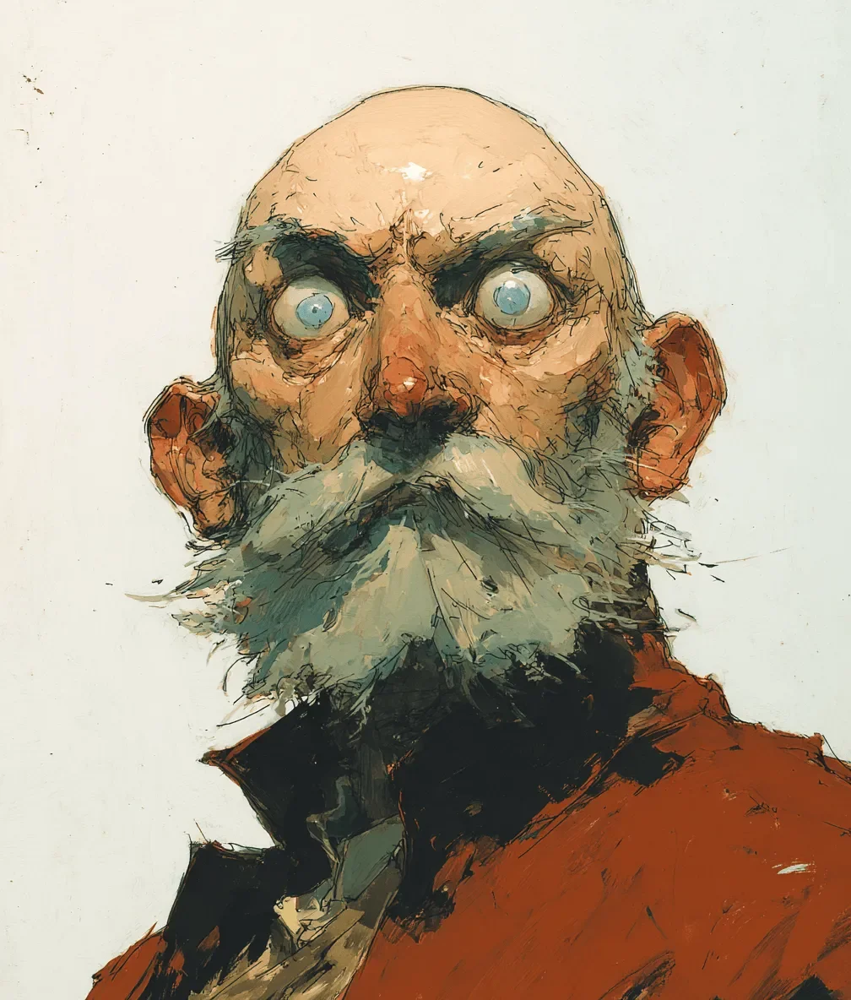

스포이드가 가늘게 떨렸다. 우는 법을 잊은 지 오래된 눈물샘 위, 유리로 된 손가락 하나가 멈춰 섰다. 한번 꽉 쥐자 용액이 흘러나왔고, 달궈진 납땜 인두만이 가질 법한 그 미묘한 우아함으로 크레이머의 각막을 덮쳤다.
[The dropper trembled, a glass finger poised over a tear duct that had long forgotten how to weep. One squeeze, and the solution hit Kramer’s cornea with the subtle grace of a soldering iron.]
그는 비명을 질렀으나 소리는 나오지 않았다. 꼬박 일주일을 이어진 공포로 꽉 조여든 가슴 안에 공기가 갇혀버린 탓이었다. 요오드와 정제된 벨라돈나를 섞어 만든 독성의 불법 칵테일, ‘스펙트라-7’ 화합물은 단순히 동공을 확장시키는 데 그치지 않았다. 그것은 영혼의 창을 가린 커튼을 거칠게 뜯어내는 것과 같았다. 눈꺼풀이 찢어질 듯 팽팽하게 뒤로 말려 올라갔고, 거울 속 그의 얼굴은 약물에 의해 강제된 광적인 경계심으로 기괴하게 굳어버렸다.
[He screamed, but soundlessly, the air trapped in a chest constricted by seven days of terror. The “Spectra-7” compound—a caustic, illegal cocktail of iodine and refined belladonna—didn’t just dilate the pupil; it tore the curtains off the windows of the soul. His eyelids snapped back, stretched to their tearing point, locking into the rictus of manic, chemical vigilance captured in the mirror.]
드디어, 그는 그것을 보게 될 터였다.
[Now, he would see it.]
지난 일주일간, 보이지 않는 어떤 존재가 그의 서재 구석을 점령하고 있었다. 고막을 짓누르는 압박감, 오존과 물비린내 나는 구리 냄새, 그리고 규칙적으로 일렁이는 먼지 입자들의 움직임이 느껴졌다. 사냥꾼이다. 크레이머는 그렇게 짐작했다. 사냥감이 잠들기만을 기다리는 사냥꾼.
[For a week, the invisible presence had occupied the corner of his study. It was a pressure on the eardrums, a smell like ozone and wet copper, a rhythmic displacement of dust motes. A hunter, Kramer assumed, waiting for the prey to sleep.]
헐떡이며 무거운 강철 렌치를 꽉 쥔 채, 크레이머는 의자를 홱 돌렸다.
[Gasping, clutching a heavy iron wrench, Kramer spun his chair around.]
방 안의 공간이 일그러졌다. 빛의 스펙트럼이 뒤틀리더니, 난폭한 보랏빛과 병적인 황토색으로 번져 나갔다. 구석은 더 이상 비어 있지 않았다.
[The room warped. The spectrum shifted, bleeding into violent violets and sickly ochres. The corner was no longer empty.]
그곳에 짐승이 있었다.
[The beast was there.]
그것은 덜덜 떨리는 젤라틴 같은 푸른 살점에, 젖은 털과 기형적으로 많은 팔다리가 뒤엉킨 흉물이었다. 하지만 놈은 덮치려고 웅크린 것이 아니었다. 놈은 라디에이터 뒤에 몸을 잔뜩 구겨 넣은 채 격렬하게 떨며, 울고 있는 얼굴을 회반죽 벽에 처박고 있었다. 놈이 고개를 들었다. 수십 개의 검은 눈동자가 자신을 내려다보는 생물체를 마주하고 극도의 공포로 커다랗게 벌어졌다. 약물에 절어 불타오르는 눈을 하고 쇠붙이 무기를 든, 두 발로 걷는 수염 난 거인을 보며.
[It was a monstrosity of shivering gelatinous blue flesh, bristling with wet fur and too many limbs. But it wasn’t crouching to spring. It was huddled behind the radiator, shaking violently, pressing its weeping face into the plaster. It looked up, its dozens of black eyes widening in absolute horror at the creature looming over it: a bipedal, bearded giant with burning chemical eyes and a weapon of iron.]
괴물이 흐느끼는 사이, 크레이머는 혼란스러워하며 렌치를 들어 올렸다. 놈은 그를 사냥하고 있던 게 아니었다. 놈은 문이 고장 난 우리 안에 사이코패스와 함께 갇혀버린 신세였던 것이다.
[Kramer raised the wrench, confused, while the monster whimpered. It hadn’t been hunting him. It was locked in a cage with a psychopath, and the door was jammed.]